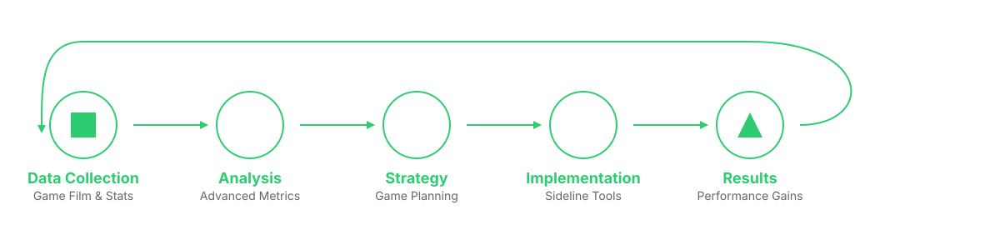
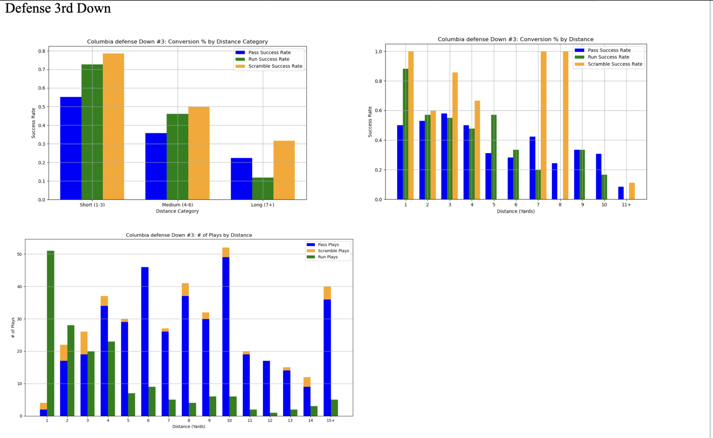

12M Analytics
Real Time Strategic Edge for College Football Programs
5 Teams Served
Constant Communication
📈 73.5% Avg Rushing Yardage Gain
Explore the Story ↓
Real Time Strategic Edge for College Football Programs
Founder & President
Fall 2024 – Present
4 ➔ 14 Analysts
Projected 15–20 Programs in 2025
While working as an analytics advisor for Brown's football team, I realized that if Brown was relying on underclassmen for analytics help, many college programs had no analytics staff at all.
I founded 12M Analytics to revolutionize decision making for college football programs that lacked the resources of top-tier schools.
12M Analytics bridges the analytics gap at the FCS and DIII levels, empowering programs to unlock new levels of strategic advantage through actionable insights
Despite the NFL's increasing analytics usage, many college programs, even D1 teams, lack even the basic analytics tools. This lead to predictable playcalling and missed in game opportunities.

This graph shows expected points by field position, helping identify optimal decision points across the field
12M Analytics delivers a complete suite of data-driven solutions designed to transform college football programs. Our services combine cutting edge analytics with practical insights.
Probability models for every 4th down situation, considering field position, time, score, and yardage.
Example: "4th & 2 from opponent's 45, down by 4 with 3:00 remaining. Go For It (High Favorability)"Comprehensive decision matrices for 2-point attempts based on score differential and game timing.
Example: "Down 7 with 2:30 remaining. Go for 2 (63% conversion rate vs. 95% PAT)"Scouting the opponent to find tendencies and weaknesses.
Example: "Team X blitzes 89% of the time on 3rd and 3"EPA analysis for every offensive formation and play type.
Practice rep distribution analysis and skill development tracking.
Example: "Red zone efficiency improved 31% with increased practice reps"Comprehensive performance comparisons across similar programs and conferences.
Example: "Top 25% in 3rd down conversion rate among FCS programs"
Our comprehensive analytics process combines advanced data science with practical football knowledge
I launched 12M Analytics as a solo founder, building and delivering all materials myself in the inaugural season. As traction grew, I expanded 12M by building a core leadership team including a Director of Analytics, a Director of Design, and a Director of Communications, laying the foundation for future analyst growth.

This graph goes over a sample scouting report for a team on third down
What Coaches Are Saying